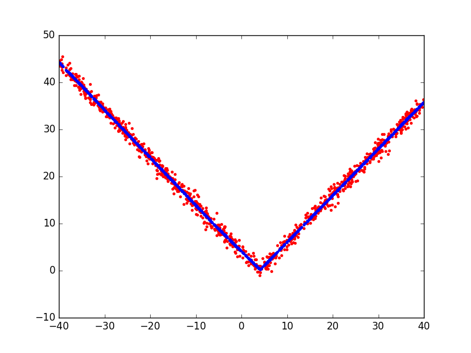

Plotting the absolute value function¶
A simple example plotting a fit of the absolute value function.
Out:
Beginning forward pass
-------------------------------------------------------------------
iter parent var knot mse terms gcv rsq grsq
-------------------------------------------------------------------
0 - - - 135.278633 1 135.550 0.000 0.000
1 0 6 537 0.928785 3 0.940 0.993 0.993
2 0 0 377 0.918642 5 0.939 0.993 0.993
---------------------------------------------------------------
Stopping Condition 2: Improvement below threshold
Beginning pruning pass
--------------------------------------------
iter bf terms mse gcv rsq grsq
--------------------------------------------
0 - 5 0.92 0.939 0.993 0.993
1 4 4 0.92 0.939 0.993 0.993
2 3 3 0.93 0.940 0.993 0.993
3 1 2 83.82 84.410 0.380 0.377
4 2 1 135.28 135.550 0.000 0.000
------------------------------------------------
Selected iteration: 1
Forward Pass
-------------------------------------------------------------------
iter parent var knot mse terms gcv rsq grsq
-------------------------------------------------------------------
0 - - - 135.278633 1 135.550 0.000 0.000
1 0 6 537 0.928785 3 0.940 0.993 0.993
2 0 0 377 0.918642 5 0.939 0.993 0.993
-------------------------------------------------------------------
Stopping Condition 2: Improvement below threshold
Pruning Pass
------------------------------------------------
iter bf terms mse gcv rsq grsq
------------------------------------------------
0 - 5 0.92 0.939 0.993 0.993
1 4 4 0.92 0.939 0.993 0.993
2 3 3 0.93 0.940 0.993 0.993
3 1 2 83.82 84.410 0.380 0.377
4 2 1 135.28 135.550 0.000 0.000
------------------------------------------------
Selected iteration: 1
Earth Model
-------------------------------------
Basis Function Pruned Coefficient
-------------------------------------
(Intercept) No 0.0693416
h(x6-3.93775) No 0.995325
h(3.93775-x6) No 1.00427
h(x0-13.1076) No -0.00984883
h(13.1076-x0) Yes None
-------------------------------------
MSE: 0.9230, GCV: 0.9389, RSQ: 0.9932, GRSQ: 0.9931
import numpy
import matplotlib.pyplot as plt
from pyearth import Earth
# Create some fake data
numpy.random.seed(2)
m = 1000
n = 10
X = 80 * numpy.random.uniform(size=(m, n)) - 40
y = numpy.abs(X[:, 6] - 4.0) + 1 * numpy.random.normal(size=m)
# Fit an Earth model
model = Earth(max_degree=1, verbose=True)
model.fit(X, y)
# Print the model
print(model.trace())
print(model.summary())
# Plot the model
y_hat = model.predict(X)
plt.figure()
plt.plot(X[:, 6], y, 'r.')
plt.plot(X[:, 6], y_hat, 'b.')
plt.show()
Total running time of the script: (0 minutes 0.165 seconds)
Download Python source code:
plot_v_function.py
Download IPython notebook:
plot_v_function.ipynb